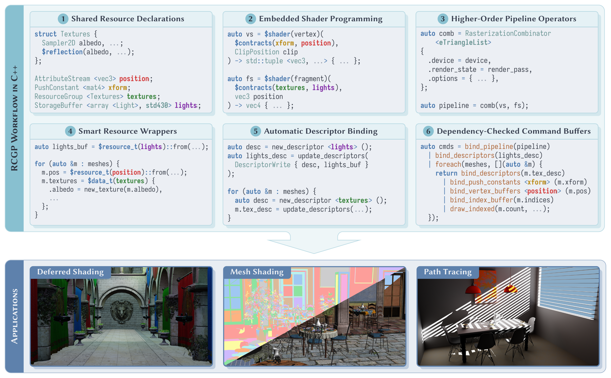

ACM SIGGRAPH 2026 · Journal Track (TOG)
Paper · Slides · Code · BibTeX

Computer graphics applications are sophisticated heterogeneous programs that orchestrate numerous components, including shaders, pipelines, resource descriptors, and command streams. In modern graphics workflows, communication between these components is mediated by resources such as shader I/O, storage buffers, and resource bindings. To make this communication correct, developers must uphold resource contracts. These contracts cover agreements on type, layout, binding locations, synchronization requirements, and related properties. In standard practice, these contracts are satisfied implicitly through conventions. As a result, contract breaches are often detected too late, at runtime by validation layers, or worse, as visual artifacts in rendered output.
In this work, we present RCGP, a system that mechanistically enforces resource contracts between components of a graphics program. RCGP formalizes contracts, which are centralized through single-source-of-truth resource declarations, as statically introspectable units that can be verified. We map objects from distinct program components to modules that import and export contracts. Modules are then composed into larger components via combinators, which check compatibility between the corresponding contracts and compute the residual contracts for the result. Finally, RCGP upholds these contracts through a set of witnesses, which encode the necessary promises.
Using a prototype implementation in C++ and Vulkan, we demonstrate that this formulation converts common classes of late failures, such as descriptor-type mismatches, layout drift, and missing synchronization barriers, into early, actionable compile-time diagnostics.
@article{sivaram2026rcgp,
author = {Sivaram, Venkataram and Bangaru, Sai Praveen and Ramamoorthi, Ravi and Li, Tzu-Mao and Ragan-Kelley, Jonathan and Durand, Fr\'{e}do},
title = {{RCGP}: Resource Contracts for Graphics Programming},
journal = {ACM Transactions on Graphics},
year = {2026},
volume = {45},
number = {4},
articleno = {70},
publisher = {Association for Computing Machinery},
address = {New York, NY, USA}
}